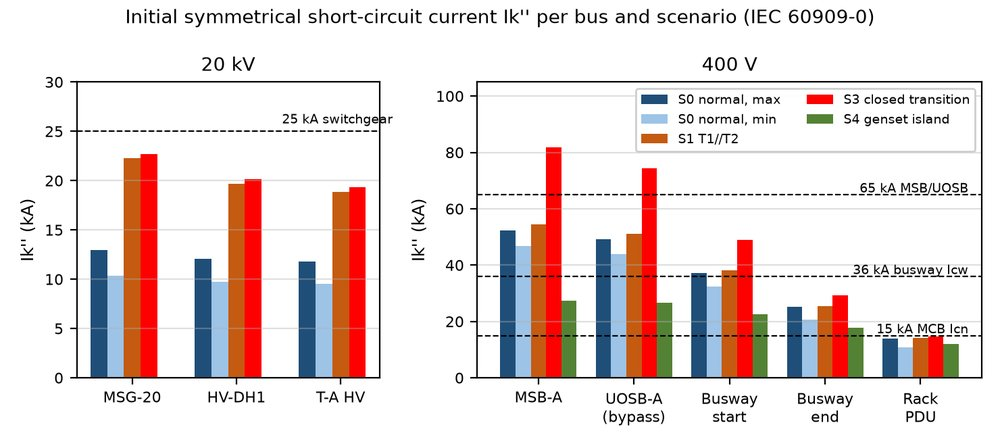
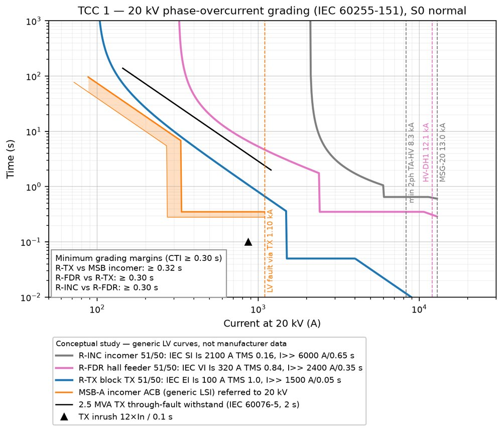
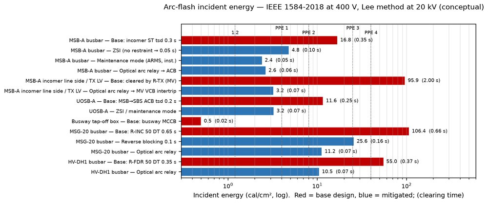

Portfolio / Project 03
scprot: an IEC 60909 short-circuit solver written from scratch, protection coordination from 20 kV down to the rack PDU, CT checks, arc-flash energy and a comparison of 20 kV neutral earthing options.
Reduced previews. The full-resolution originals are in the repository.



Other projects: 01 Design basis & single-line diagrams · 02 Load & equipment sizing tool · 04 BESS in a grid-constrained data center · 05 Next-generation power architecture and commissioning (research and concept study)